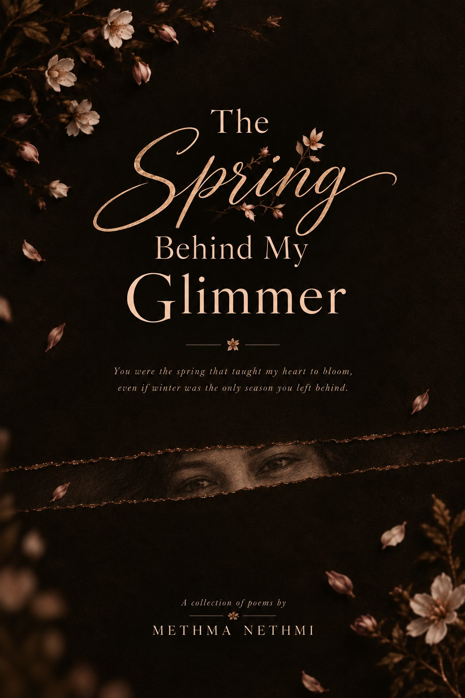
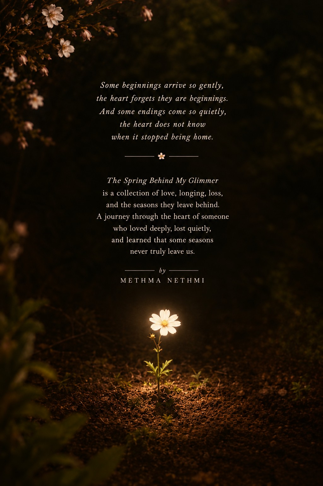

A Debut Poetry Collection
TheSpringBehind MyGlimmer
“You were the spring that taught my heart to bloom, even if winter was the only season you left behind.”
PDF · 88 pages · 42 poems

About the Collection
Love, longing, loss — and the seasons they leave behind.
The Spring Behind My Glimmer is a journey through the heart of someone who loved deeply, lost quietly, and learned that some seasons never truly leave us.
The collection moves through memories, imagination, affection, separation, friendship, grief, healing, and the quiet ways in which people become part of who we are.
“Some beginnings arrive so gently, the heart forgets they are beginnings. And some endings come so quietly, the heart does not know when it stopped being home.”

Author's Note
A few words before you turn the first page.
Here, I bring you my debut poetry collection, The Spring Behind My Glimmer. Even now, it feels a little like a dream. To someone who once struggled to find her voice in this language, being able to transform those very words into poetry feels like a quiet miracle.
Life moves through seasons. We encounter different emotions, circumstances, and souls along the way. Some remain, some depart, yet each leaves behind something that becomes a part of who we are. Love, too, has its seasons.
This collection is a blend of fiction and lived emotion, woven through memories, imagination, love, loss, longing, and the quiet ways in which we grow. Some pages may feel familiar, some may belong entirely to another world, but I hope each finds a small place within your own.
As you turn these pages, I invite you not merely to read, but to feel. To pause between the words, wander through the seasons, and perhaps find a little of yourself among them.
With that, I would like to offer my deepest gratitude to my family, my teachers, my friends, my muse, and every soul whose presence, love, kindness, or absence became a thread in these pages. This book could not have bloomed without you.
And now, The Spring Behind My Glimmer is no longer only mine. From here onwards, it is yours.
With love,
Methma Nethmi
Publication Details